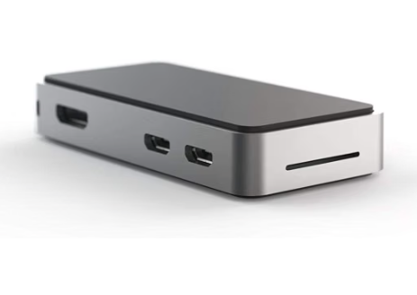
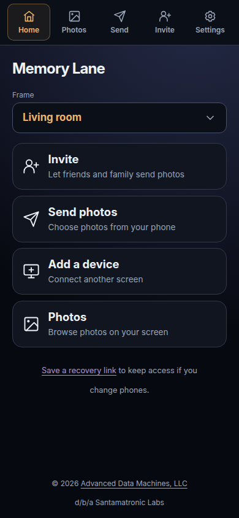
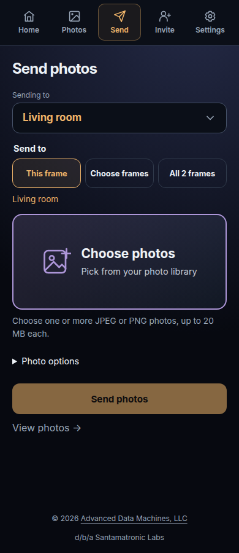

A small device. Their favourite people. Families send photos from a phone, and Memory Lane brings them to the TV or monitor already in the room.
Works with a TV or monitor that has an HDMI input.
TV illustration with an AI-generated example family photo.
Plug Memory Lane into HDMI and power. Connect it to Wi-Fi during setup.
Share a private invitation link. Family members choose photos on their phone.
Select the TV’s HDMI input. The slideshow plays automatically from there.

Current prototype enclosure shown.
A compact aluminium case keeps the device discreet. No keyboard or mouse is needed; families manage photos from a phone, tablet or computer.
Open your private link, choose a frame and send a photo. The web app works from a phone, tablet or computer, with no app-store download needed.

A clear starting point
Photos, invitations and controls in one place.

Choose. Send. Share.
A large photo button makes the next step obvious.
Actual Memory Lane web app screens, using example frame names.
Residents enjoy photos on the TV already in their room. Once it is set up and the right input is selected, the slideshow needs no taps or swipes.
Invite chosen friends and family using private links. Send everyday moments to a selected frame, from wherever they are.
Previously downloaded photos keep playing if the internet drops. New photos arrive when the device reconnects.
Owners can browse photos, change slideshow settings and see available device storage from the same interface.
A small pilot can show how Memory Lane fits your residents, family communication and existing screens. Let’s discuss a demonstration and a manageable first trial.
What’s needed: an HDMI-equipped TV or monitor, a power outlet and Wi-Fi with internet access. The TV must be on and set to the Memory Lane HDMI input; Memory Lane does not automatically switch on the TV. Care-community network access should be agreed with your team.
Arrange a demonstration or discuss a pilot.